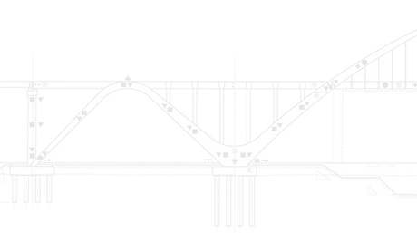

Civil
- Portugal
- Spain
- Germany
- Italy
- Switzerland
- France
- United Kingdom
- Denmark
- Austria
- Poland
- Finland
- Belgium
- Greece
- Slovakia
- Russia
- Brazil
- Mexico
- Colombia
- EUA
- Taiwan
- China
- South Korea
- Algeria
- Australia
- Hungary
Countries where FiberSensing is present.
Making health monitoring of large structures easier throughout the most important life stages

Advantages
-
Measurement of different parameters in a single chain
Reduced network cabling
Large number of sensors per measurement unit
Cost competitive solution
Multiplexing & Multipurpose
-
Long term, self-referenced measurements
Self calibrated measurements units
Reliability
-
Long distance between sensors and measuring equipment, as well as between the sensors, without compromising measurements
Low Losses
-
24/7 operation
Operation under harsh environments
Simple installation
Robust Design
-
All fiber optic sensors
Immune to EMI/RFI
Passive
Technology
Civil
Products List
View all
-
 FS63 - Weldable
FS63 - Weldable
Temperature Sensor -
 FS63 - Embedded
FS63 - Embedded
Temperature Sensor -
 FS62 - Embedded
FS62 - Embedded
Strain Sensor -
 FS62 - Surface
FS62 - Surface
Strain Sensor